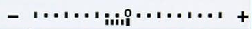
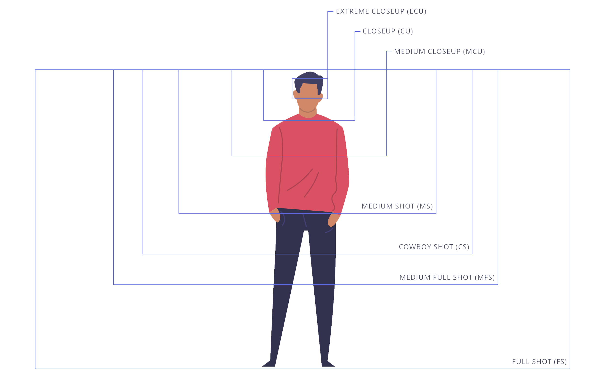

CHEQROOM
Online platform accessible from onelogin. It is used to book and rent cinema equipment, like cameras,
lenses,
lights, cables, etc.
The equipment is in the Media Lab, located in M -1.1.
The Media Lab staff may ask for a project name and the professor's name.
The only gear that can be rented is the one that we have discussed during the lessons. To access any other
equipment we may ask the professor to plan a lesson on it.
Damaging gear may result in an expense. Minor accidents usually pass but everything that happens must be
reported to the Media Lab staff.
Skedda
Online platform accessible from onelogin. It is used to book the studios for any shooting.
If there is the need to hang anything from the studio ceiling, the Media Lab staff or a professor must be
called in to do it.
No student is allowed to do it.
The staff assistance should be noted in the scheduling email.
12 February, 2026
Keep in mind
We have 3 types of cones in the human eye: long, medium, short. They are L-Cones, M-Cones, and S-Cones respectively.
They capture light from the visible spectrum, and are distinguished based on the 3 bands of wavelengths they are most sensitive to. We distinguish between long, medium and short wavelengths, hence the cone names.
Short is blue, medium is green, and long is red.
A camera sensor's aspect ratio usually is 3:2;
A camera sensor, for every 4 photosites, 1 is for the reds, 1 for the blues and 2 for the greens. The
photosites
placement and order matters very little.
February 18, 2026
Focal length is the distance, expressed in millimiters, between the focal point (the camera sensor) and the lens.
When the two get closer, the angle of view increases. Conversly, the angle gets tighter when the two get further.
The sensor size changes the angle of view.
A full-frame sensor is 36mm wide.
Lenses are grouped in many categories. The main lenses are
| wide angle | → | short focal length; under 40mm |
| normal | → | focal length; between 40mm and 60mm |
| telephoto | → | long focal length; above 60mm |
Exposure is the total amount of light hitting and captured by a sensor. It is determined by relative aperture, shutter time, ISO.
Exposure is measured in EV.
ISO and shutter time change 1 EV by doubling or halving their value.
Modern cameras have a built-in light meter, composed of a line marked by EV points.
The center marking represents a predetermined correct exposure.

Every sensor has a limited dynamic range
Some tools we can use to judge a scene's brightness are
Depth of field is the depth of the plane of focus.
An immaginary box in front of the camera that, within margin of error (known as circle of confusion), determines what is in focus.
A longer focal length lens makes an out of focus background appear blurrier.
Hyperfocus when the end of the focus plane matches with the "infinity barrier", we get a plane of focus that has infinite distance and only has a minimum distance.
It can be calculated but we won't be asked to do so. There are sites that can do that for us, such as dofmaster.com.
Basic lighting setup. It is composed by:
| keylight | → | directional light, the strongest light |
| fill light | → | diffuse light, reduces contrast on the subject by illuminating its shadows. It should be -1 or -2 stops compared to the keylighs |
| backlight | → | (aka rim light) directional light, a dim light that gives the subject's head and shoulders a silhouette to avoid blending with the background. It shouldn't illuminate the face |
C-stands have legs with different heights to allow for multiple C-stands to be placed very close.
The cables we use to power the lights to the ballast are the silver ones. They need to have the 2 red dots aligned before connecting them.
To detach them, pull the collar away and then the whole cable.
The ballast is powered by a cable that has to be inserted and rotated.
The diffused led panel we use comes with a control unit that can be detached.
Keep the cables secure and out of the way of people passing to avoid tripping over lights and equipment.
| establishing shot | → | the subjects are present but extremely small |
| extreme wide shot | → | subject is up to half the height of the shot |
| wide shot | → | account the world in the frame |
| full shot | → | the whole character is in frame |
| medium wide shot | → | cut at the knees |
| cowboy shot | → | from a little below the hips to the head |
| medium shot | → | the legs are out of frame |
| medium close up | → | cut around the chest |
| close up | → | framing the face |
| extreme close up / detail | → | framing a part of the face |

Single shot is having 1 character in frame. If any other character is visible but out of focus and turned away from the camera (like in a dialogue shot and counter shot) they are not considered, it's still considered a single shot.
two shot and three shot have respectively two and three characters in frame.
Multi shot is framing more than 3 characters.
Insert shot is another angle, framing or scene that emphasize a different aspect of the previous shot / ongoing scene.
Known camera angle and position are useful when planning a shot.
These are the following:
| eye level | → | eye height |
| low angle shot | → | shot from below, tilt upward. Characters appear important |
| high angle shot | → | shot from above, tilt downward. Characters appear small and unimportant/powerless |
| hip level shot / cowboy shot | → | around hip height |
| knee level shot | → | knee height, framing the legs |
| ground level | → | lowest height possible |
| shoulder level | → | at shoulder height |
| dutch angle / dutch tilt shot | → | camera is rolled, the horizon isn't straight |
| overhead shot / bird's eye view | → | shot from high up, camera points straight down |
| aerial shot | → | shot taken from an aerial view; no tilt |
Types of camera movements
| 180° rule | → | shoot at a shutter speed that is double the framerate. E.g. for 25fps use 1/50s shutter speed. |
| Relative aperture | → | known as the f-number, it is obtained by dividing the effective aperture by the focal length |
| EV | → | Exposure Value is a number derived from the combination of values set on the shutter time, f-number and ISO |
| Reciprocity | → | the inverse relationship between the aperture and shutter speed. Meaning that a higher shutter speed (lower shutter time) requires a greater aperture (lower f-number) to compensate for the exposure |
| Hyperfocus | → | having a depth of field far enough where the furthest object in focus is infinitely distant |
| Directional light | → | opposite of the diffuse light, it is meant to illuminate a delimited area |
| Diffused light | → | light used to illuminate a large area. A led panel or a point light + diffuser are usually preferred |
| Ballast | → | Formally known as the Power Control Unit, it is used to power lights |